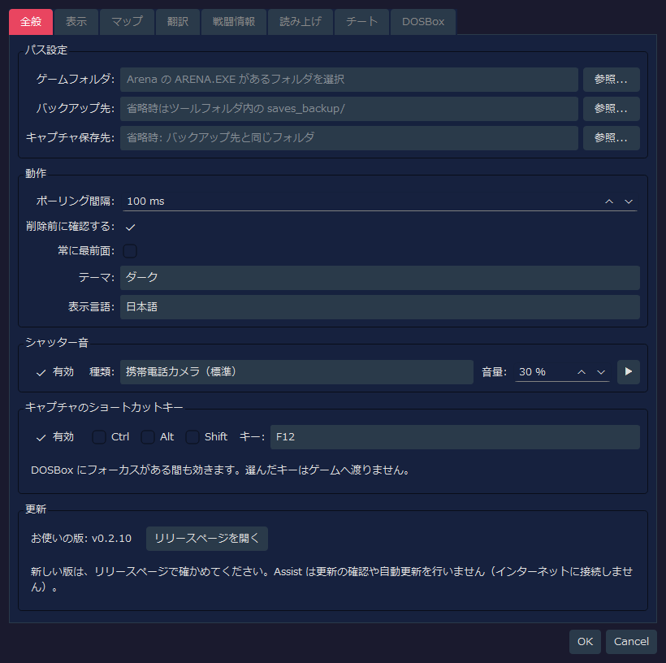
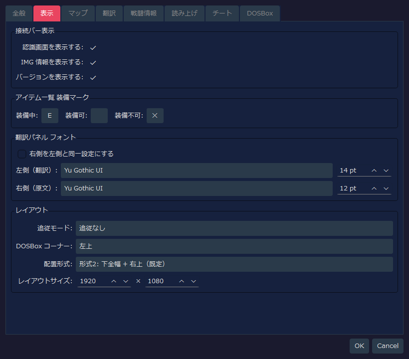
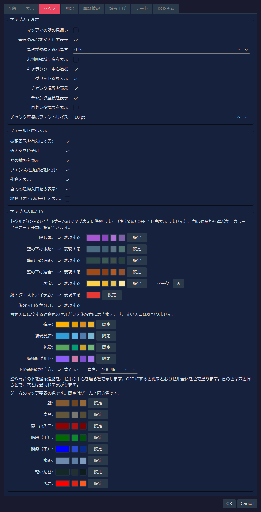
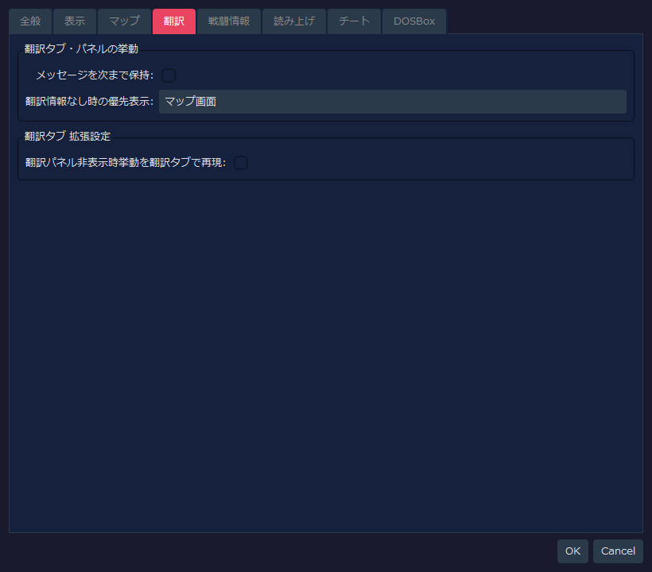
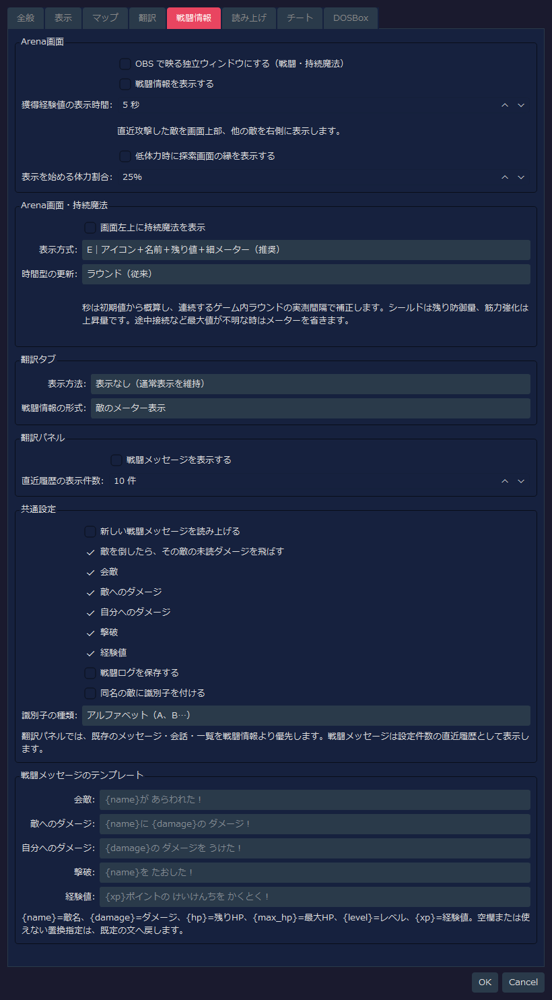
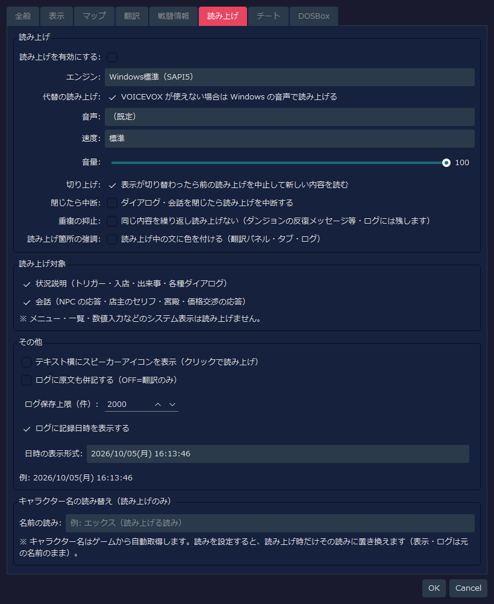
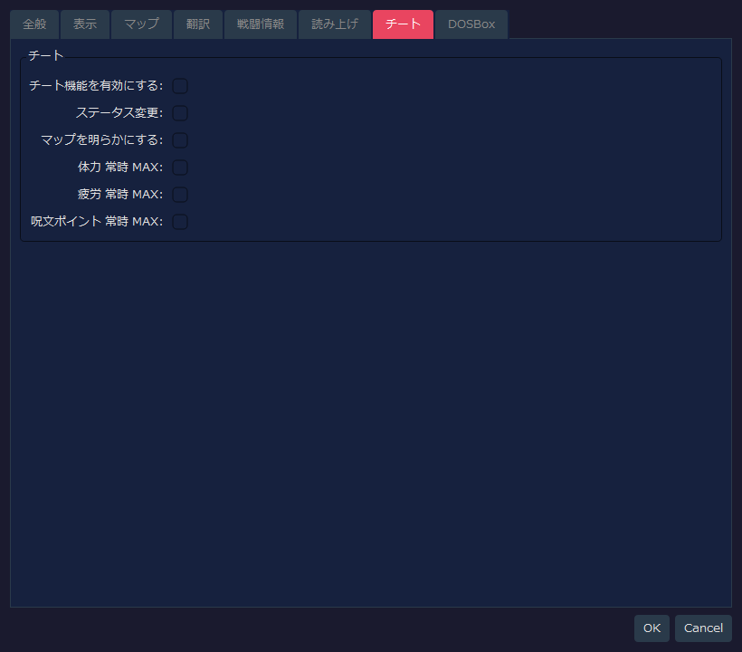
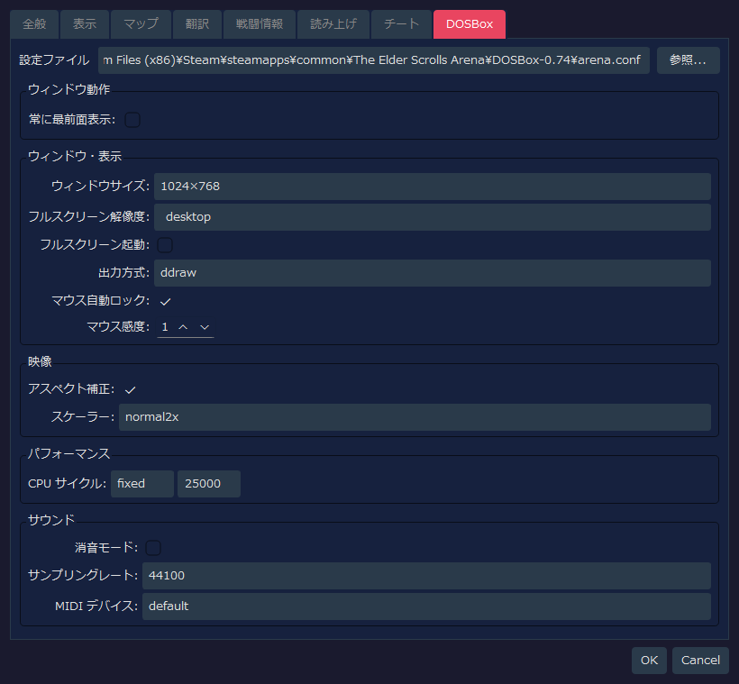

RTESArenaAssist — 設定ダイアログ詳細ガイド
RTESArenaAssist の設定ダイアログにある各タブのキャプチャと、各 UI 要素の説明を掲載しています。
画像は、お使いの表示言語の初期設定・既定の「ダーク」テーマの設定ダイアログを撮ったものです。
DOSBox タブの値は、Assist 側の設定ファイルだけでなく、既定パスの arena.conf を読み取った結果も反映されます。そのため、利用環境の arena.conf が異なる場合は表示値も変わります。
目次
全般タブ
パス、基本動作、シャッター音、キャプチャのショートカットキーを設定し、お使いの版を確かめるタブです。

パス設定
| 表示ラベル | 初期値 | 説明 |
|---|
ゲームフォルダ: | 空 | Arena の ARENA.EXE やセーブファイルがあるフォルダ。未設定時は、セーブ管理やゲームデータ読み取りを利用できない |
バックアップ先: | 空 | セーブバックアップの保存先。空の場合は、ツール設定ファイル横の saves_backup/ を使用する |
キャプチャ保存先: | 空 | スクリーンショットの保存先。空の場合は、バックアップ先と同じフォルダを使用する |
参照... | - | 各フォルダを選択する |
動作
| 表示ラベル | 初期値 | 説明 |
|---|
ポーリング間隔: | 100 ms | DOSBox 画面やメモリ状態を監視する周期。短いメッセージを拾いやすくするため、初期値は短め |
削除前に確認する: | ON | キャプチャやバックアップを削除するときに確認ダイアログを表示する |
常に最前面: | OFF | Assist 本体ウィンドウを他のウィンドウより手前に表示する |
テーマ: | ダーク | UI の配色テーマを選択する |
表示言語: | 自動（システム言語） | UI 言語。空設定ではシステム言語をもとに自動判定され、変更はアプリ再起動後に反映される |
シャッター音
| 表示ラベル | 初期値 | 説明 |
|---|
有効 | ON | スクリーンショット保存時に効果音を再生する |
種類: | 携帯電話カメラ（標準） | 再生するシャッター音。標準、短縮版、ダブル、高音強調、マイルドから選択できる |
音量: | 30 % | シャッター音の再生音量 |
▶ | - | 選択中のシャッター音を試聴する |
キャプチャのショートカットキー
ゲーム画面（DOSBox）にフォーカスがあるまま、キーを押すだけでキャプチャを保存できます。数秒で消えるメッセージを撮るときに使います。
| 項目 | 既定値 | 説明 |
|---|
有効 | ON | ショートカットキーでのキャプチャを使う |
Ctrl / Alt / Shift | OFF | 修飾キーを組み合わせる場合に ON にする |
キー: | F12 | 使うキー。F5〜F12、PrintScreen、Pause、ScrollLock、Insert、Home、End、PageUp、PageDown から選択できる |
- 押したキーはゲームには渡りません。ゲームや DOSBox が使うキー（F1 / F3 / F4 / F8、Ctrl+F5〜F12、Alt+F12、Alt+Pause）は選べないようにしてあります
- 他のアプリが同じキーをショートカットに使っている場合、このアプリを起動している間はそのアプリのショートカットは動作しません。別のキーを選ぶと両立できます
- キーを登録できなかった場合はステータスバーに表示されます。その場合もツールバーのカメラボタンからは撮影できます
更新
| 表示ラベル | 初期値 | 説明 |
|---|
お使いの版: | - | 使っている Assist の版 |
リリースページを開く | - | Assist のリリースページ（Releases の一覧）をブラウザで開く。新しい版があるかは、ここで確かめる |
Assist はインターネットに接続しないため、更新の確認や自動更新は行いません。
表示タブ
接続バー、アイテム一覧の装備マーク、翻訳パネルのフォント、レイアウトを設定するタブです。

接続バー表示
| 表示ラベル | 初期値 | 説明 |
|---|
認識画面を表示する: | ON | 接続バーに現在の認識画面名を表示する |
IMG 情報を表示する: | ON | 接続バーに検出中の IMG 情報を表示する |
バージョンを表示する: | ON | 接続バーやステータスバーにアプリのバージョンを表示する |
アイテム一覧 装備マーク
| 表示ラベル | 初期値 | 説明 |
|---|
装備中: | Ｅ | 装備中アイテムの左端に表示する 1 文字マーク |
装備可: | 空 | 装備可能アイテムのマーク。初期値は空なので何も表示しない |
装備不可: | ✕ | 装備できないアイテムの左端に表示する 1 文字マーク |
翻訳パネル フォント
| 表示ラベル | 初期値 | 説明 |
|---|
右側を左側と同一設定にする | OFF | ON にすると、原文側のフォントとサイズを翻訳側と同じにする |
左側（翻訳）: | アプリ既定 / 14 pt | 翻訳文に使うフォントとサイズ。フォント名が未保存の場合は、実行環境のアプリ既定フォントが選ばれる |
右側（原文）: | アプリ既定 / 12 pt | 英語原文に使うフォントとサイズ。同期 OFF のため、翻訳側とは別に設定できる |
レイアウト
| 表示ラベル | 初期値 | 説明 |
|---|
追従モード: | 追従なし | DOSBox と Assist のどちらかが移動したときに、もう一方を追従させるかを選ぶ |
DOSBox コーナー: | 左上 | 一発配置やレイアウトモードで DOSBox を置く画面上の基準コーナー |
配置形式: | 形式2: 下全幅 + 右上（既定） | DOSBox と Assist パネル領域の分割形式。形式2は右上と下全幅を使う標準レイアウト |
レイアウトサイズ: | 1920 x 1080 | レイアウトモード時の全体キャンバスサイズ |
マップタブ
探索マップとフィールド拡張表示を設定するタブです。

マップ表示設定
| 表示ラベル | 初期値 | 説明 |
|---|
マップでの壁の見通し: | OFF | OFF では、壁の向こうの未確認領域をマップに記録しない。ON にすると Arena 原作に近く、壁越しの領域も記録される |
全高の高台を壁として表示: | ON | 床から天井まで詰まった高台を、壁の色で表示する。変わるのは表示の分け方だけで、視線の遮り方には影響しない。全高でない高台は高台のまま表示する |
高台が視線を遮る高さ: | 0 % | 天井の高さを 100% として、上端がこの高さ以上の高台がマップの視線を遮る。0% では全ての高台が視線を遮る |
未判明領域に床を表示: | OFF | OFF では判明済みセルだけ床色を表示し、未探索範囲の形を隠す。ON ではマップ全体を巻物地色で表示する |
キャラクター中心追従: | ON | キャラクター移動時にマップを自動でキャラクター中心へ追従させる。停止中は手動パンできる |
グリッド線を表示: | ON | セル境界のグリッド線を表示する |
チャンク境界を表示: | ON | フィールドマップで 64 マス単位のチャンク境界を強調表示する |
チャンク座標を表示: | ON | フィールドマップ上に各チャンク座標を表示し、位置把握を補助する |
再センタ境界を表示: | OFF | フィールドマップの再センタ境界を破線で表示する。位置調査や確認用の補助表示 |
チャンク座標のフォントサイズ: | 10 pt | チャンク座標ラベルの文字サイズ |
フィールド拡張表示
| 表示ラベル | 初期値 | 説明 |
|---|
拡張表示を有効にする: | ON | フィールドマップ拡張表示の親スイッチ。OFF にするとゲーム内自動マップに近い表示になる |
道と壁を色分け: | ON | 通行できる道と、建物や壁など通行できない部分を別色で描き分ける |
壁の輪郭を表示: | ON | 壁の輪郭や edge 地形を表示する |
フェンス/生垣/庭を区別: | ON | フェンス、生垣、庭などの edge 系地形を接続線で区別する |
作物を表示: | ON | トウモロコシや畑などの作物を専用色やマークで表示する |
全ての建物入口を赤表示: | ON | 家、酒場、神殿、街門などの入口も赤く表示する。クリプト、塔、ダンジョン入口はこの設定に関わらず赤表示 |
地物（木・茂み等）を表示: | OFF | 木、茂み、岩、墓、廃墟などを簡略マークで重ねる。数が多く地図が読みにくくなるため、初期値は OFF |
マップの表現と色
ゲームのマップは、壁の下を通る通路などを区別せずに描きます。ここでは、それらを 区別して描くかどうかと、各要素の色を設定します。各行の「表現する」を OFF にすると、その要素は ゲームのマップと同じ表示に戻ります（お宝のみ OFF で何も表示しません）。
| 表示ラベル | 初期値 | 説明 |
|---|
隠し扉: | ON | 発見済みの隠し扉を専用色で表示する。発見するまでは壁のまま |
壁の下の水路: | ON | 壁の下を通る水路を専用色で表示する。実際にそこを通って発覚させるまでは表示しない |
壁の下の通路: | ON | 壁の下を通る通路を表示する。実際にそこを通って発覚させるまでは表示しない |
壁の下の溶岩: | ON | 壁の下を通る溶岩を専用色で表示する。実際にそこを通って発覚させるまでは表示しない |
お宝: | ON | お宝を入手した場所にマークを重ねる。右の欄でマークの文字を変更できる。チートタブの「マップを明らかにする」が ON のときは、入手したかどうかに関わらずお宝のある場所をすべて表示する |
鍵・クエストアイテム: | ON | お宝のうち、鍵とクエストの品のマークを別の色で表示する。OFF にするとお宝と同じ色で表示する。お宝を OFF にしたときは表示しない |
施設入口を色分け: | ON | 街のマップで、宿屋・装備品店・神殿・魔術師ギルドの入口に接する建物色のセルを施設ごとの色に置き換える。赤い入口の色は変わらない。各施設の色は下の欄で変更できる |
下の通路の描き方: | 管で示す / 濃さ 100% | 壁や高台の下を通る通路を、セルの中心を通る管で示す。OFF にすると従来どおりセル全体を色で塗る。管の色は穴と同じ色で、穴とは途切れず繋がる。濃さ を下げると管が控えめになる |
各項目の右にある色見本をクリックすると任意の色を選べます。隣の小さなボタンは 選びやすい候補色、既定 は元の色に戻すボタンです。壁・高台・扉と出入口・階段（上・下）・ 水路・乾いた谷・溶岩といったゲーム本来の要素の色も、同じ方法で変更できます（既定はゲームと同じ色）。
翻訳タブ
翻訳パネルや翻訳タブの補助表示を設定するタブです。

翻訳タブ・パネルの挙動
| 表示ラベル | 初期値 | 説明 |
|---|
メッセージを次まで保持: | OFF | トリガーやオブジェクト対話メッセージを、次のメッセージが来るまで翻訳パネルに残すかを指定する |
翻訳情報なし時の優先表示: | マップ画面 | 探索中で翻訳文がないとき、翻訳タブ全域に何を表示するかを選ぶ。初期値ではマップ画面を優先する |
翻訳タブ 拡張設定
| 表示ラベル | 初期値 | 説明 |
|---|
翻訳パネル非表示時挙動を翻訳タブで再現: | OFF | ON にすると、翻訳パネルを隠したときと同じように、翻訳結果やダイアログメッセージを翻訳タブ側へ表示する。検証用の拡張設定 |
戦闘情報タブ
戦闘と持続魔法の表示先を個別に設定します。新しい表示・読み上げ・保存機能は既定でOFFです。以前の開発版で保存した設定値は、そのまま引き継がれます。表示文は日本語・英語・スペイン語・ドイツ語・フランス語・イタリア語・ロシア語に対応します。

Arena画面
| 項目 | 初期値 | 説明 |
|---|
OBS で映る独立ウィンドウにする（戦闘・持続魔法） | OFF | 戦闘情報と持続魔法を OBS のウィンドウキャプチャで選べる一つの窓にまとめる |
戦闘情報を表示する | OFF | 会敵済みで現在視認中の直近の攻防相手を画面上部、ほかの会敵済み生存敵を視界外でも右側へ表示する。体力・疲労・呪文Pと、与えたダメージや撃破を確認できる。受けたダメージは探索領域の下端に表示する |
獲得経験値の表示時間 | 5秒 | 経験値を得た時点で右下に表示し、各枠を指定秒数後に消す。続けて得た場合は古い枠を左側へ送る（1〜60秒） |
低体力時に探索画面の縁を表示する | OFF | 体力が指定割合以下になったとき、探索画面の縁を淡く明滅させる。戦闘情報の敵表示を使わなくても有効にできる |
表示を始める体力割合 | 25% | 低体力の縁表示を始める割合（最大体力に対して1〜99%） |
受けたダメージ表示は発生から約5秒で自動的に消えます。敵の視界は場所を問わず同じ判定を使います。地図や座標が確定しない場合は敵を推測表示しません。
OBS で収録する場合は、この設定を ON にしてから「ウィンドウキャプチャ」で「RTESArenaAssist オーバーレイ」を選び、透過を許可してゲーム映像より上に重ねます。戦闘情報と持続魔法は同じソースに映ります。
Arena画面・持続魔法
| 項目 | 初期値 | 説明 |
|---|
画面左上に持続魔法を表示 | OFF | ライト、シールド、筋力強化、火炎耐性、レビテートの状態を表示する |
表示方式 | E | A「名前＋残り値」、B「名前＋横メーター」、C「アイコン＋横メーター」、D「アイコン＋時計回りの暗転」、E「アイコン＋名前＋残り値＋細メーター」、F「小型チップ」から選ぶ |
時間型の更新 | ラウンド | ライト・火炎耐性・レビテートをラウンドで更新するか、1秒ごとの概算秒数で更新するかを選ぶ。秒数はゲーム内の進行間隔から補正するため、DETAILなどで進行速度が変わっても固定倍率とは限らない |
シールドは残り防御量、筋力強化は上昇量を示します。最大値を確認できない途中接続では、メーターを省く場合があります。秒数表示は概算で、効果の終了判定はゲーム内の状態に従います。
翻訳タブの戦闘情報
| 項目 | 初期値 | 説明 |
|---|
表示方法 | 表示なし | 通常表示を維持する／通常表示と戦闘情報を併用する／戦闘情報を全面表示する、から選ぶ |
戦闘情報の形式 | 敵のメーター表示 | 戦闘情報を出す場合に、文字情報か敵のメーター表示かを選ぶ |
翻訳パネルの戦闘情報
| 項目 | 初期値 | 説明 |
|---|
戦闘メッセージを表示する | OFF | 翻訳パネルへ戦闘文を表示する。従来のメッセージ・会話・一覧が出る場合は、そちらを優先する |
直近履歴の表示件数 | 10件 | 戦闘文の直近1〜50件を表示する。件数を超えたら古い文を外して新しい文を加える |
共通設定とメッセージ
| 項目 | 初期値 | 説明 |
|---|
新しい戦闘メッセージを読み上げる | OFF | 読み上げ全体を有効にした場合、新しい戦闘文を発生順に読む。直近の同一文を除外せず、次のダメージで前の読み上げを切り上げない |
敵を倒したら、その敵の未読ダメージを飛ばす | ON | 撃破時に、その敵との与ダメージ・被ダメージの再生中と未読分を切り上げる。別の敵の読み上げは続ける |
戦闘ログを保存する | OFF | 通常ログとは別に戦闘履歴を保存する。記録がある場合のみログタブ内に切替を表示する |
同名の敵に識別子を付ける | OFF | 同じ名前の敵が複数いる場合だけ、名前の後ろに区別用の記号を付ける |
識別子の種類 | アルファベット | A・B…または1・2…から選ぶ |
戦闘メッセージのテンプレート | 各言語の既定文 | 会敵・敵へのダメージ・自分へのダメージ・撃破・経験値の文章を編集する。空欄や使えない置換指定は既定文へ戻る |
読み上げタブ
翻訳文の読み上げ、読み上げ対象、ログ表示、キャラクター名の読み替えを設定するタブです。

読み上げ
| 表示ラベル | 初期値 | 説明 |
|---|
読み上げを有効にする: | OFF | 翻訳文の読み上げ機能全体を有効化する |
エンジン: | Windows標準（SAPI5） | 読み上げエンジンを選ぶ。VOICEVOX はローカルの VOICEVOX エンジンが起動している場合に選択できる |
代替の読み上げ: | ON | VOICEVOX を選んでいて使えないとき、読めなかった文を Windows の音声で読み上げる。OFF にすると読み上げない |
音声: | （既定） | エンジンが Windows標準（SAPI5）のときに表示される。使用する SAPI 音声。（既定）では OS 側の既定音声を使う |
キャラクター: | スタイル ID 0 のキャラクター | エンジンが VOICEVOX のときに表示される。読み上げに使う VOICEVOX のキャラクター |
スタイル: | スタイル ID 0 | エンジンが VOICEVOX のときに表示される。選んだキャラクターの声のスタイル |
🔊 テスト再生 | - | エンジンが VOICEVOX のときに表示される。選んでいるキャラクターとスタイルで、短い文を試しに読み上げる |
速度: | 標準 | 読み上げ速度 |
音量: | 100 | 読み上げ音量。0 から 100 の範囲で設定する |
切り上げ: | ON | 表示が切り替わったら前の読み上げを中止し、新しい内容を読み上げる。NPC の返答からメニューへ戻った時も止まる |
閉じたら中断: | OFF | ダイアログや会話を閉じたら、進行中の読み上げを止める |
重複の抑止: | OFF | 同じ内容を繰り返し読み上げない（ダンジョンの反復メッセージなど）。ログには残る |
読み上げ箇所の強調: | OFF | 読み上げ中の文に色を付ける（翻訳パネル・翻訳タブ・ログ） |
VOICEVOX が見つからないときは「VOICEVOX を起動すると選択できます（127.0.0.1:50021）。」と表示されます。 VOICEVOX を起動してから設定ダイアログを開き直すと、キャラクターとスタイルを選べます。
読み上げ対象
| 表示ラベル | 初期値 | 説明 |
|---|
状況説明（トリガー・入店・出来事・各種ダイアログ） | ON | トリガー、入店、出来事、各種ダイアログなど、状況を説明する文章を読み上げ対象にする |
会話（NPC の応答・店主のセリフ・宮殿・価格交渉の応答） | ON | NPC の応答、店主のセリフ、宮殿、価格交渉の応答など、会話文を読み上げ対象にする |
メニュー、一覧、数値入力などのシステム表示は読み上げません。
その他 / ログ
| 表示ラベル | 初期値 | 説明 |
|---|
テキスト横にスピーカーアイコンを表示 | OFF | 表示テキストの横にクリック読み上げ用のスピーカーアイコンを出す |
ログに原文も併記する | OFF | 翻訳ログに英語原文も併記する。OFF では翻訳のみを表示する |
ログ保存上限（件）: | 2000 | 保存するログ件数の上限。超えた古いログは自動削除される |
ログに記録日時を表示する | ON | ログ項目に記録日時を表示する |
日時の表示形式: | yyyy/MM/dd(aaa) HH:mm:ss | ログ日時の表示フォーマット。プリセットまたはカスタム書式を選べる |
キャラクター名の読み替え
| 表示ラベル | 初期値 | 説明 |
|---|
名前の読み: | 空 | ゲームから自動取得したキャラクター名を、読み上げ時だけ指定した読みに置き換える。表示とログには元の名前が残る |
チートタブ
ゲーム内数値の書き換えや常時 MAX 系の補助機能を設定するタブです。

| 表示ラベル | 初期値 | 説明 |
|---|
チート機能を有効にする: | OFF | チート系機能全体の親スイッチ。これだけを ON にしても、サブ設定を ON にしない限り何も変えない |
ステータス変更: | OFF | 能力値編集などのステータス変更を許可する |
マップを明らかにする: | OFF | チート有効時にマップを全表示する |
体力 常時 MAX: | OFF | チート有効時、現在体力が最大値より低ければ最大値へ戻す |
疲労 常時 MAX: | OFF | チート有効時、現在疲労を最大値へ戻す |
呪文ポイント 常時 MAX: | OFF | チート有効時、現在呪文ポイントを最大値へ戻す |
DOSBox タブ
DOSBox の arena.conf を読み取り、ウィンドウ表示、映像、性能、音声を設定するタブです。

設定ファイル / ウィンドウ動作
| 表示ラベル | 初期値 | 説明 |
|---|
設定ファイル | 既定パスの arena.conf | DOSBox の設定ファイル。Assist 側の設定が空の場合、標準の Arena Steam 版配置を既定パスとして読む |
参照... | - | 任意の arena.conf を選択する |
常に最前面表示: | OFF | DOSBox ウィンドウを他のウィンドウより手前に表示する |
ウィンドウ・表示
| 表示ラベル | 初期値 | 説明 |
|---|
ウィンドウサイズ: | 1024×768 | windowresolution。プリセットから選び、カスタム選択時は W/H の数値欄を編集する |
フルスクリーン解像度: | desktop | fullresolution。フルスクリーン時の解像度を指定する |
フルスクリーン起動: | OFF | fullscreen。DOSBox をフルスクリーンで起動するかを指定する |
出力方式: | ddraw | output。DOSBox の描画出力方式 |
マウス自動ロック: | ON | autolock。DOSBox 画面内にマウスを自動ロックする |
マウス感度: | 100 | sensitivity。DOSBox 内のマウス感度 |
映像
| 表示ラベル | 初期値 | 説明 |
|---|
アスペクト補正: | ON | aspect。映像の縦横比を補正する |
スケーラー: | normal2x | scaler。DOSBox の画面拡大フィルタ |
パフォーマンス
| 表示ラベル | 初期値 | 説明 |
|---|
CPU サイクル: | fixed 25000 | cycles。CPU エミュレーション速度を指定する。fixed の場合は右側の数値欄が有効になる |
サウンド
| 表示ラベル | 初期値 | 説明 |
|---|
消音モード: | OFF | nosound。DOSBox の音声を無効化する |
サンプリングレート: | 44100 | rate。ミキサーのサンプリングレート |
MIDI デバイス: | default | mididevice。MIDI 再生に使用するデバイス |